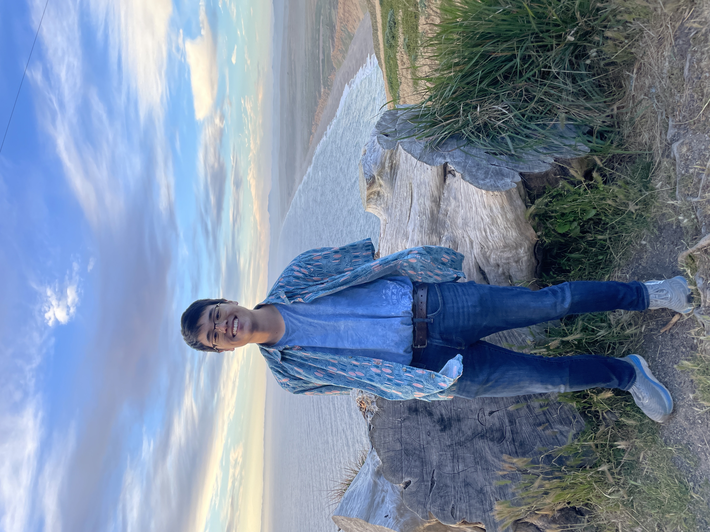
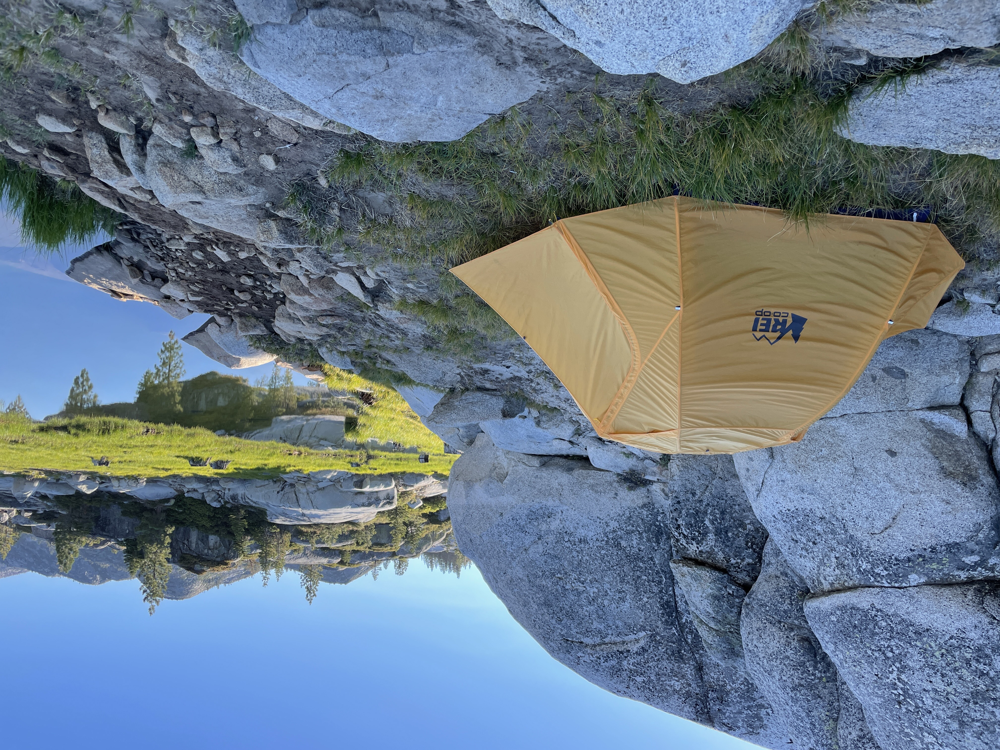
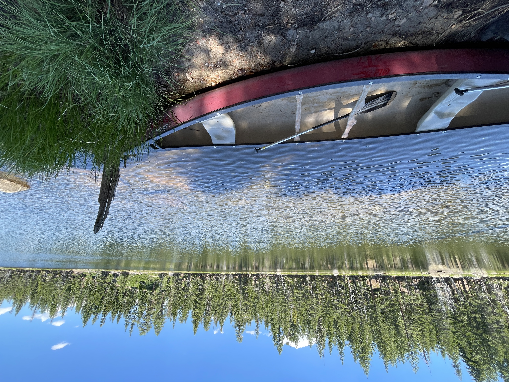
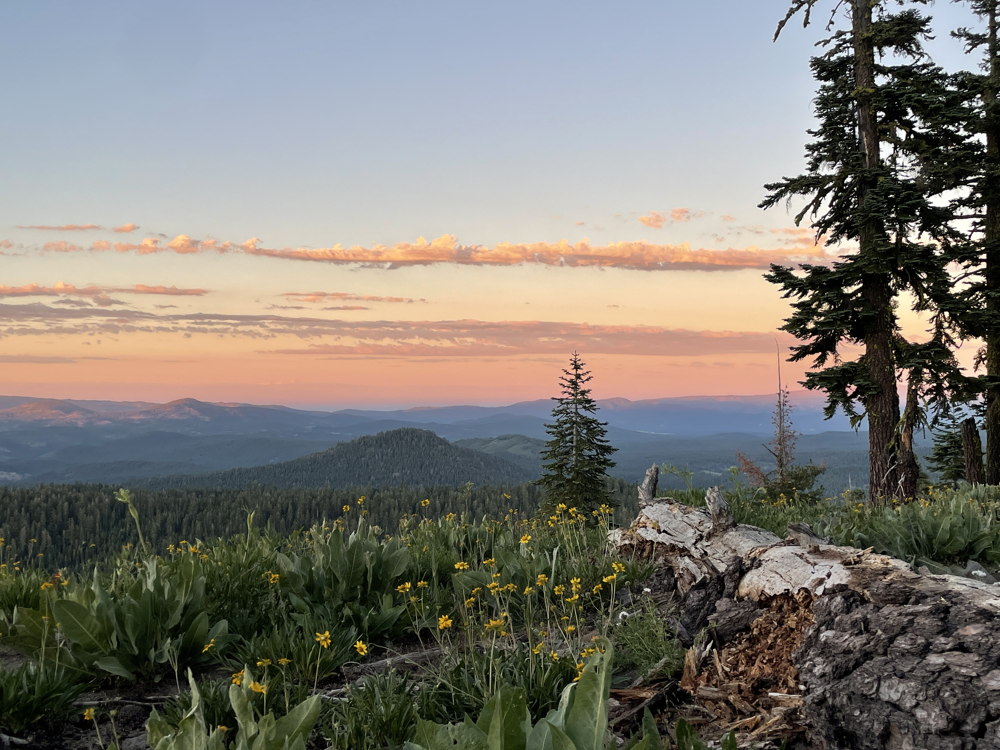

|  | Jared Chou, Class of 2025, Computer Science |
I am a senior at Boston University studying computer science and business administration and I grew up in Foster City, California (suburb of San Francisco). I'm especially interested in full stack engineering and machine learning and am getting hands on experience with both through internships and research. In my free time, I love being outdoors and enjoy camping, canoeing, and hiking!
| Picture | Activity | Short Description | External Links |
|---|---|---|---|
|  | Camping |
I greatly enjoy camping in my free time! I have been camping with my Boy Scout troop for many years and have camped all across California, in several other states (Nevada, Idaho, Utah) and even in France! |
Camping |
|  | Boating |
I really enjoy any paddle boating activities including canoeing, kayaking, and whitewater rafting! I have done short, flatwater canoe trips and also 50 mile river runs in canoes. I've done whitewater river runs in both kayaks and rafts which has been super fun! |
Canoe Trips |
|  | Hiking |
Continuing with the theme of the outdoors, I greatly enjoy hiking in the woods with friends! I love escaping urban environments to spend more time in nature. I find hiking as a fun and cheap way to get outdoors and exercise with friends. |
AllTrails |